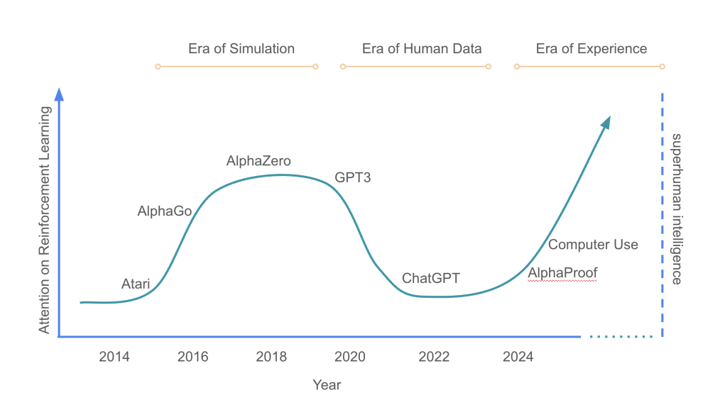
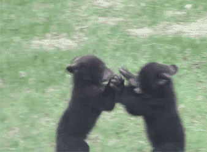
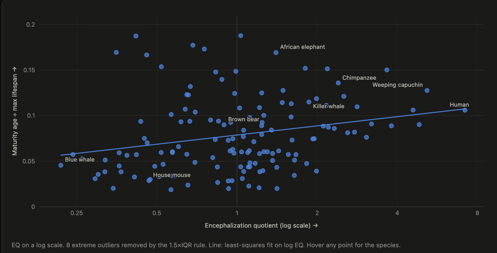
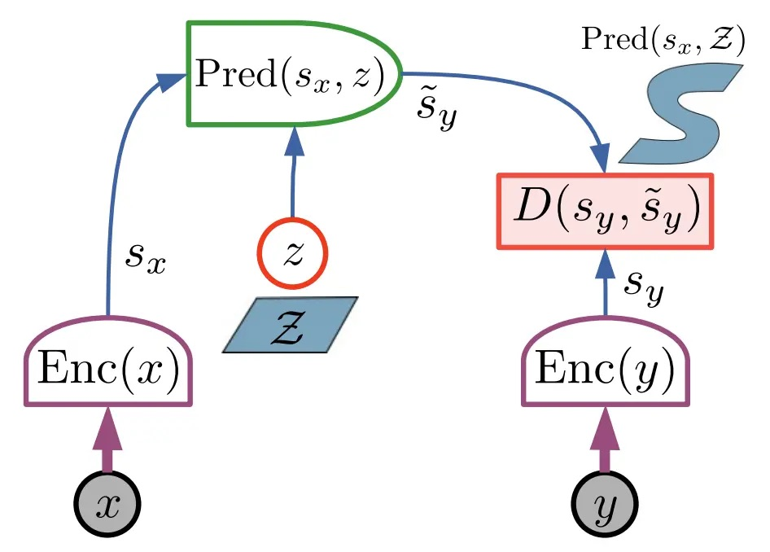
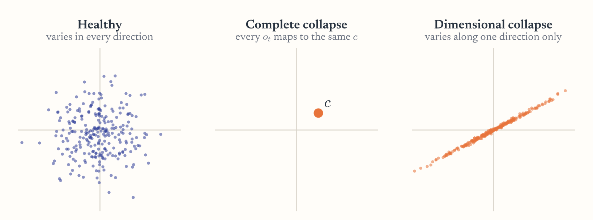
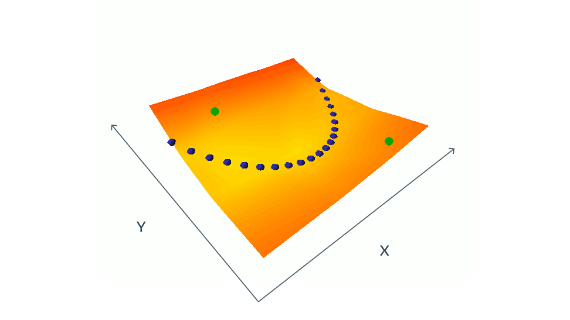
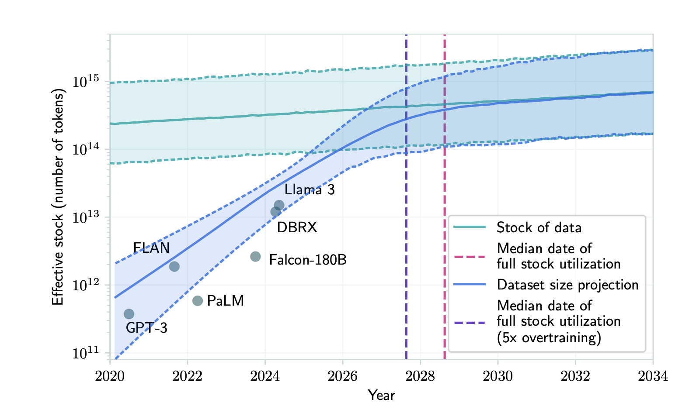
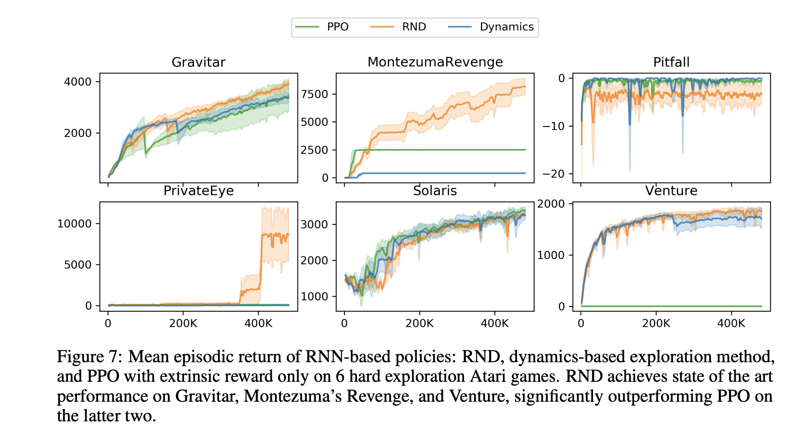
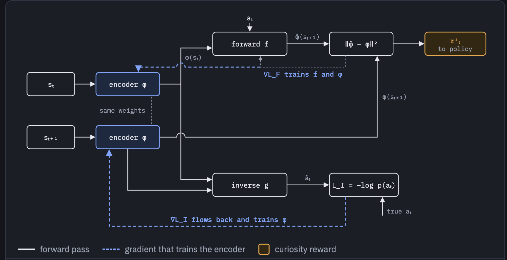

Draft preview · created
Thoughts on Experiential Learning in Embodied Intelligence
Inspired from biological intelligence

“The most wonderful thing about [children] is their infinite capacity for wonder” — Alison Gopnik
The Bitter Lesson
In September 2025, on the Dwarkesh Patel podcast, Richard Sutton revisited the Bitter Lesson, arguing that methods that scale with computation consistently outperform those relying on human-engineered knowledge.
The first part of this lesson seems to be well understood. Across speech recognition, computer vision, and machine translation, hand-engineered features have largely given way to end-to-end learning. In Atari, for example, agents built on game-specific features were overtaken by agents learning from raw pixels. Rather than having humans specify how a system should represent the world, we increasingly let models discover useful representations themselves.
The second part, however, seems far less appreciated. We have largely moved away from humans manually engineering the representations models learn, but we still rely overwhelmingly on humans to produce the data they learn from.
In Welcome to the Era of Experience, Sutton and David Silver extended the Bitter Lesson, arguing that the next major advances in AI would come from systems learning primarily through their own experience rather than human-generated data.
Modern AI systems are trained primarily on data produced, collected, or filtered by humans. This has been extraordinarily successful, but it introduces a fundamental ceiling. Human data is finite, and producing more of it is slow and expensive. More importantly, each additional data sample relies on human aggregation and filtering, rather than being generated to maximize the model's own learning.
In contrast, experiential learning methods generate their own data through exploration and search. Rather than relying on humans to supply each additional learning experience, agents can seek out experiences that improve their own understanding. This shifts the bottleneck from human labor toward computation, which has historically scaled far better.

We have already seen the power of this approach1. AlphaGo, initially trained on games played by strong human players, was defeated 100-0 by AlphaGo Zero, which learned entirely through self-play. Its successor AlphaZero extended the same approach to chess and shogi. These systems surpassed human expertise not by learning from more human demonstrations, but by generating their own experience.
In natural language, LLMs initially improved with the scale of data and model parameters. But as high-quality internet data runs out, research is increasingly turning towards methods beyond imitation including reinforcement learning and test-time learning.
Still, I don't think the broader implication is fully understood, particularly in embodied intelligence. In academic labs and industry, much of the hype surrounds methods built on human-derived priors like language, or on human-collected data from teleoperation, videos, and egocentric capture.
But if the goal is general physical intelligence— not just competence on certain, limited tasks— then these approaches risk falling into the exact trap Sutton warns about.
Animals Play and Learn
Young animals offer a useful example of experiential learning. They learn from exploration: playing, fighting, moving, falling, and trying new things.

A natural counterpoint is that many animals, like horses or giraffes, can walk almost immediately after birth. Indeed, this seems to suggest the opposite of self-exploration: that genes encode a kind of “pre-training” at birth.
But this is the same short-term win the bitter lesson describes. Built-in behavior lets an animal act right away, but that behavior is less flexible. There appears to be a tradeoff between how much behavior is specified at birth and how much is learned through experience. Animals with larger brains relative to body size2, measured by the encephalization quotient (EQ), tend to be born more helpless and to mature more slowly, as seen below.

Chimpanzees, for example, remain dependent for years while learning to navigate their physical and social environments. In essence, a bigger brain is more compute, and a longer childhood is more experience. Nature’s most general learners seem to invest more in both.
This is correlation, not causation, but it points to an interesting trend: greater general intelligence seems to come with greater dependence on learning from experience. Nature, it seems, also backs the bitter lesson.
Humans push this to an extreme. Infants are born with little3 hardcoded behavior and stay helpless for years, yet they learn motor skills, recognize patterns, and predict outcomes, and eventually develop far greater behavioral flexibility and general intelligence.
I want to focus on three aspects of this learning: (1) forming a rich, internal model of the world, (2) self-collection of data, and (3) learning from this continual stream.
Forming a Rich Internal Dynamics Model (AMI)
From: LeCun, Schmidhuber, Balestriero, Hafner
The big world hypothesis starts from the fact that we cannot model every aspect of the world4, so intelligence must build an approximate5 internal model. This model must turn sensory observations—touch, sight, smell, and taste—into representations that can guide physical actions.

Predicting every detail of future observations, as generative world models attempt to do, is computationally expensive and unnecessary for planning. Much of that detail is irrelevant to action, and many aspects of the physical world are difficult or impossible to simulate accurately. That is to say, raw perception is high-dimensional6, noisy, and redundant.
A useful internal model should therefore only preserve structure needed to predict consequences of actions, rather than reproducing the world in full detail. To accomplish that, we map an observation $o_t$ to a latent state $z_t$. Making $z_t$ much lower-dimensional than $o_t$ forces the encoder to produce a compressed representation.
$$z_t = f(o_t), \qquad f: \mathbb{R}^n \to \mathbb{R}^d, \quad d \ll n$$
Our brains do this all the time. Imagine yourself in a coffee shop you frequent. How many chairs are there? Though you've seen all of them, you might not know. Like chairs, leaves on a tree, or the color of your friend's t-shirt, much of perception is abstracted away. Relevant information is contained, and the rest is ignored. Additionally, when goals $g$ change, so does the latent information carried (even given the same input). This means that latent states are a goal-conditioned form of perception. We can modify the equation above as follows:
$$z_{t}=f\left(o_{t}\left|\right.g_{}\right)$$
From the set of a given system's actions, we can choose an $a_t$ and use $z_t$ to predict the next state $z_{t+1}$, an idea from classical control theory (where causation is approximated through correlation). This is our forward dynamics model7:
$$\hat{z}_{t+1}=dyna\left(z_{t,}a_{t}\right)$$
$$\hat{z}_{t+1}\sim p_{\theta}\left(\cdot\mid z_{t,}a_{t}\right),with\;stochasticity$$
$$\hat{z}_{t+1}\sim p_{\theta}\left(\cdot\mid z_{t,}h_{t,}a_{t}\right),with\;memory$$

Planning is simply the process of rolling out trajectories to imagine different futures. A college student can anticipate the sequence of actions that lead to graduation; an athlete can compare the consequences of eating fast food with cooking a healthy meal. In this way, dynamics models serve not only as representations of the world but also as a tool for planning within it.
To learn with this model, we define the loss as the $L2$ distance in latent space between our predicted and observed next state:
$$L=\Vert\hat{z}_{t+1}-z_{t+1}\Vert^2=\Vert^{}dyna\left(f\left(o_{t}\left|\right.g_{}\right)_{,}a_{t}\right)-f\left(z_{t+1}\left|g_{}\right.\right)\Vert^2$$
But learning a useful dynamics model introduces a fundamental problem: representation collapse. If both the perceptual encoder and forward model are trained jointly to minimize prediction error, they can discover a trivial solution. The encoder maps every observation to a constant $c$, and the forward model simply predicts $c$. Prediction error becomes 0, but the learned representation contains no information about the world. More subtly, the representation can undergo partial collapse, preserving variation in only a few dimensions while discarding much of the information needed to model the world.

There are two broad families of solutions to this problem: contrastive and non-contrastive learning. We can judge them by scalability and performance.
Contrastive Methods
Contrastive methods use positive and negative samples to make representations distinguishable.

With InfoNCE loss:
$$\mathcal{L}_{\text{InfoNCE}} = -\log \frac{\exp\left(\operatorname{sim}\left(z, z^{+}\right) / \tau\right)}{\exp\left(\operatorname{sim}\left(z, z^{+}\right) / \tau\right) + \sum_{i} \exp\left(\operatorname{sim}\left(z, z_{i}^{-}\right) / \tau\right)}$$
However, as representations become higher-dimensional and more semantic, negatives become harder to choose: many are uninformative, and many are false negatives that should not be pushed apart.
Non-Contrastive Methods
Non-contrastive methods, on the other hand, prevent collapse through a stop-gradient, often with an exponential moving average (EMA) target network (BYOL with EMA; SimSiam without EMA):
$$\mathcal{L}=\left\|g\big(f_{\theta}(o_{t}),a_{t}\big)-sg\big(f_{\bar{\theta}}(o_{t+1})\big)\right\|^2$$
$$\bar{\theta}\leftarrow\tau\bar{\theta}+\left(1-\tau\right)\theta,\quad 0\le\tau\le1$$
or alternatively through regularization:
$$L_{\text{total}}=L_{\text{pred}}+\lambda_{}L_{reg}$$
One example found in Barlow Twins and VICReg approaches is dimensionality regularization:
$$\mathcal{L}_{reg_{BT}}\coloneqq\sum_{i}\sum_{j\neq i}C_{ij}^2$$
Also constraining the feature space by using an inverse dynamics model:
$$\hat{a}_{t}=g\big(\phi(s_{t}),\,\phi(s_{t+1})\big),\qquad\mathcal{L}_{reg_{inverse}}=\left\|\hat{a}_{t}-a_{t}\right\|_2^2$$
A recent work LeJEPA uses SIGReg as the regularizer:
$$L_{reg_{SIG}}=\frac{1}{M}\sum_{m=1}^{M}\sum_{k=1}^{T}\omega_{k}\left\lbrack\left(\frac{1}{N}\sum_{i=1}^{N}\cos\left(t_{k}u_{m}^{\top}z_{i}\right)-e^{-t_{k}^2/2}\right)^2+\left(\frac{1}{N}\sum_{i=1}^{N}\sin\left(t_{k}u_{m}^{\top}z_{i}\right)\right)^2\right\rbrack$$
<explain equation above>
One regularizer that’s tempting but wrong is reconstruction. You attach a decoder $d_{\psi}$ and add
$$\mathcal{L}_{reg_{dec}} = \big\|d_{\psi}\left(f_{\theta}\left(o_{t}\right)\right) - o_{t}\big\|^{2}$$
This does prevent collapse, since a constant $z$ can’t redraw the image. But it works by forcing $z$ to keep every pixel the decoder needs, including texture, lighting and background noise. That’s exactly the detail latent prediction was supposed to let us throw away. A good regularizer shapes the latent space itself (Barlow Twins, VICReg) or ties it to what the agent controls (inverse dynamics). It shouldn’t tie it back to the raw input.
Beyond collapse, dynamics models face several other challenges. Latent spaces can distort temporal structure and movement, motivating both temporal straightening and temporal regularization. Long rollouts also accumulate error and make planning expensive, motivating hierarchical models that predict over multiple timescales. Finally, recurrent states can maintain a historical latent state that carries forward information not recoverable from the current observation alone.
Thinking Outside Tokens
This section is not only an argument for dynamics models but also one against approaches built on human priors, especially language.8
Language evolved as a medium for communication, not necessarily for thought. To produce text, an LLM projects its final hidden state onto a vocabulary and samples a token; the next step begins from that discrete token rather than from a full continuous state. It is important to note that earlier computation isn’t entirely lost: the KV cache preserves intermediate representations from previous positions at every layer. However, the final hidden state itself is not directly carried forward, so each new step must proceed through a discrete token while attending to cached representations. This creates an information bottleneck (more info).
With a vocabulary of size V, each sampled token carries at most $\log_2 V$ bits—around 17 bits for a vocabulary of 100,000 tokens. A hidden state, by contrast, can represent vastly more information. Continuous latent architectures remove the restriction of passing computation forward through discrete tokens, allowing each step to build directly on the representation produced by the last. At $d=4096$ in $\text{bf16}$, it can in theory represent $65{,}536$ raw bits, though its actual information content may be smaller. Recent work is already moving in this direction. A few examples: COCONUT9 feeds the last hidden state back in as the next input instead of sampling a token, ECHO predicts environment states, LCM operates in sentence-level concept embeddings rather than tokens, NextLat adds an additional loss for predicting its own next hidden state. Q-labs makes a similar case (in section 2).
But bandwidth is only the shallow problem. Inherently, a model trained to predict text can only learn a world representation shaped by what text contains. Text is a secondhand record of reality: the world is filtered through human perception and put into discrete symbols before the model ever sees it , leaving out much of reality that words cannot capture. That loss is worst for physical skill, especially knowledge that is difficult to verbalize, like the exact force it takes to crack an egg without crushing it. From a cognitive science perspective, Barbara Tversky argues in Mind in Motion that our internal models of the world are shaped fundamentally by action and spatial experience rather than language. Babies, for example, think and plan in complex ways long before they learn language. In that view, language is not the substrate of thought but a way of expressing only part of it. It even has a word for what it cannot capture: ineffable.
A counterexample is GPT-6 Astra, which surprised researchers by controlling robot arms with no task-specific training. If Astra learned that capability from language alone, it would be a serious challenge to the argument above: perhaps sufficiently powerful language models can recover far more of the physical world than expected. But Astra is widely suspected of having seen robot data in training. If so, the result points the other way: even the strongest language models need direct physical data.
Either way, both paths remain dependent on data generated and selected by humans. Moving past that is the subject of this piece’s second argument below.
And none of this means abandoning language. It remains an extremely useful interface for communicating instructions. The claim is narrower: language may be a poor substrate for a model's thought process; continuous latent representations like those of dynamics models can preserve far more information. Industry momentum may still keep language-centered architectures dominant. But the bitter lesson holds: hand-designed human priors tend to lose to representations learned end to end, and language is no exception.
Self-Collection of Data Through Exploration (Ineffable)
From: Pathak, Agrawal, Efros, Schmidhuber
Note: I consider this the most important section of this essay, and one I hope to explore in greater depth. Over the past decade, most progress in AI has come from scaling compute and data, more than from new architectures.10 But we are running out of human-generated data to scale. The next step is to turn compute, not human labor, into data: systems that generate their own experience and learn from it.

Human knowledge can be thought of as a fractal. Its edges mark the frontier of what is known; each discovery pushes that boundary outward.
We ultimately want systems capable of pushing that frontier outward on their own. But to discover beyond what is already known, a system must first learn to choose what to learn next. Today, that choice is still largely made by humans. In pre-training, models learn from a massive corpus that humans have generated, collected, filtered, labeled, and organized.

The first issue is that this data is finite. A recent paper estimates that high-quality internet text could be exhausted within the next couple years (in fact, companies are already extracting text from [and destroying] hardcover books). And the same basic constraint applies even to internet video: there is a finite amount of useful human-generated experience already available.11
The main response has been to collect new data through expert traces, demonstrations, and egocentric capture. This data is becoming increasingly valuable as reflected by it's current ~$100B market valuation, especially as the supply of data shrinks. This pipeline, however, is expensive and labor-intensive. In a recent blog post, Skild AI wrote that for every dollar spent collecting data, it spent roughly three dollars on quality control. It is not scalable to require every additional unit of learning to have a proportional amount of human labor. As the Bitter Lesson suggests, we must move away from converting human labor into data and instead learn to convert compute directly into data.
One way to move in this direction is through deployment. Coding tools, autonomous vehicles, and robots improve on this by collecting data from their own trajectories. These can then be added back to pre-training corpora or used for reinforcement learning.
Yet most RL today still relies on task-based rewards and environment construction. A robot may be told to pick up a cup, open a drawer, or navigate toward a goal. Its experiences are valuable insofar as they help maximize reward for that particular objective. Learning within the task can certainly generalize, but the exploration itself remains confined by the task. Once the objective changes, a new reward and environment have to be specified. The agent decides how to gather data, but humans decide what data is worth gathering.12
Of course, aggregating experiences across many tasks and deployments produces a diverse training distribution that can improve generalization. In principle, we could continue specifying increasingly difficult tasks and training agents to solve them. But this strategy still depends on humans continually defining new tasks. That cuts against the bitter lesson: every task and environment is human knowledge built into the system, so progress scales with human effort, not compute. Moreover, as intelligence advances beyond our own capabilities, we cannot assume we will be able to clearly define the next set of tasks worth solving.
More fundamentally, task diversity is not the same as learning-directed exploration. An agent may improve by encountering diverse environments, but its learning remains largely incidental, without any deliberate effort to seek experiences that would most improve its understanding. This is not only sample-inefficient but fundamentally undirected. What is missing is the ability to actively seek experiences that target its own uncertainty, failures, or gaps in knowledge.
This suggests a hierarchy in how much learning depends on externally chosen data: (1) finite pre-training data, (2) continuous data generated through task-directed deployment, and (3) agents that actively seek the experiences most useful for improving themselves.
The first two will automate important tasks and create enormous economic value for our labor-constrained economy. Still, the third is the more scalable strategy that will win in the long term.13
To remove humans from the loop completely, the agent must learn to decide what is worth experiencing, and this must be based on its own current understanding of the world.
Biological intelligence offers inspiration for a different strategy. Simple evolutionary signals have produced remarkably complex behavior within nature. The pressure to survive and reproduce, for example, gave rise to animals capable of learning about consciousness and chemistry, despite neither of these explicitly specified as objectives. A similar principle exists within a person's lifetime, especially in childhood. Infants are not confined to externally specified tasks, yet their exploration is clearly not random or unguided, as seen above. Certain experiences intensely capture attention, while others become boring almost immediately.14 At every moment, something internal is evaluating what is worth engaging with.
Again, what is worth learning depends on what the learner currently understands. An infant can spend days on a toy that bores an adult in seconds. At the same time, the equations of gravity, meaningless to a child, captivated an adult mind for over a decade. Useful experience is therefore not absolute; it is crucially conditioned on the learner’s current model of the world.
Importantly, these signals drive exploration without a predefined endpoint.15 A fixed dataset is exhausted once it has been consumed, and a task reward becomes irrelevant once the task is solved. Intrinsic learning does not stop at either boundary. As long as some part of the world remains surprising, unpredictable, or poorly understood, the learner can continue generating experiences targeted at that gap.
In some sense, this makes the process of acquiring this data "deep." The learner does not merely passively observe more examples; instead, it repeatedly probes the same underlying structure from different angles until its consequences become familiar. Alyosha Efros gives an example: close your eyes and imagine what a set of car keys tastes like. Absurd as it sounds, you may have some intuition of its metallic taste because, as babies, we did not merely look at objects— we grabbed, rotated, struck, dropped, and even mouthed them. No one assigned those movements as tasks and there is no reward for discovering how keys taste. Still, the learner probes because there is something left to understand. Once that interaction became predictable, focus can shift elsewhere.
It is clear that whatever stage of learning—from a baby to a scientist—intelligence needs signals to determine where to direct its computation. What are those internal signals that push the boundary of the fractal outward? Below are a few.
Novelty
A 2018 paper from Burda et al. proposes estimating novelty using Random Network Distillation (RND). The idea is surprisingly simple: train a network $f_{\theta}(x)$ to match the output of a randomly initialized, frozen target network $f_{\theta}(x)$. If a new input lies in or around the previous training input distribution, the error between the network and target is low. Otherwise, it stays high— that error is your novelty signal.
In some sense, RND is a cheap surrogate for density estimation in high-dimensional spaces where state counting is intractable: prediction error serves as a rough proxy for state rarity.
Here are runs of a one-hidden-layer network mapping $\mathbb{R}^{1} \to \mathbb{R}^{1}$:
In run 2 above, notice that during the second phase (highlighted in blue), the function loses some of its approximation in the phase 1 region (highlighted in yellow). This is what we would call catastrophic forgetting.

The RND paper shows strong results on Montezuma’s Revenge, a game where rewards are so sparse that PPO with only extrinsic reward stalls around 2,500 points. RND keeps climbing past 7,500. It was the first method to beat average human performance on the game without demonstrations or access to the emulator’s internal state, and its best runs explored 22 of the 24 rooms on the first level. But it is not a free win: on certain games (Pitfall, Solaris) it does slightly worse than plain PPO.
One issue with RND is that over time, this signal fades as the predictor trains on visited states—not necessarily in proportion to useful learning—so it needs normalization or a companion signal; otherwise the intrinsic reward collapses toward zero regardless if learning actually happened. A solution the paper implements is to divide intrinsic reward by a running estimate of its standard deviation.
The underlying limitation is that novelty does not necessarily imply useful learning. RND rewards states based on prediction error, so unfamiliar states that resemble previously visited ones may receive less reward than those that differ substantially. But this distinction depends on the geometry of a random network, not on how much the agent can learn from the experience. A wall of random static and a door to an unexplored room may both produce high novelty, even though only one offers meaningful opportunities for learning.
Latent Prediction Error
A natural starting point for deciding where a model should focus its learning is the prediction error of its forward dynamics model:
$$r_{prediction}=\left\|\hat{z}_{t+1}-z_{t+1}\right\|^2$$
The intuition is simple: areas where predictions are most inaccurate, the model has the most to learn. But, prediction error alone introduces the noisy TV problem. An agent observing random TV static will consistently make incorrect predictions, even though no amount of observations will help it understand the noise. That is to say, the model cannot distinguish between what it has yet to learn and what is fundamentally unpredictable.
To address this, we need a signal that captures learnable uncertainty rather than raw prediction error.
One approach is to learn a representation $z_t$that filters out unpredictable noise, only capturing information relevant to the environment's underlying dynamics. A method from Pathak et. al called Intrinsic Curiosity Module (ICM) uses the inverse dynamics model to remove noise from the feature space:

$$\hat{a}_{t}=g\big(\phi(s_{t}),\,\phi(s_{t+1})\big),\qquad\mathcal{L}_{_{Inverse}}=\left\|\hat{a}_{t}-a_{t}\right\|_2^2$$
$$\phi \leftarrow \nabla\bigl[(1-\beta)\,L_I + \beta\,L_F\bigr]$$
Learning representations that remove noise outside the agent’s actions creates three possible cases, of which two succeed:
Action-dependent and learnable (success): A toddler dropping a spoon or someone learning to drive. Curiosity is initially high but fades as the dynamics are learned.
Action-independent (success): Rain, moving clouds, or background conversations. These reveal nothing about the agent’s actions, so ICM encourages the encoder to ignore them.
Action-dependent but unpredictable (fail): Pulling a slot machine lever or refreshing a social media feed. These reveal the action taken, but their outcomes remain random, potentially rewarding curiosity indefinitely.
The fundamental limitation is the third case: action relevance does not imply learnability. ICM can filter out noise independent of the agent’s actions, but may still reward unpredictable outcomes that depend on them.
Learning Progress
Rather than rewarding what the model cannot predict, we can reward what it is becoming better at predicting, commonly known as learning progress.
Consider a baby's reaction to peek-a-boo. Early on, babies have a weak understanding of occlusion: when your hands cover your face, they believe it disappeared from reality. Out of sight quite literally means out of mind. Your reappearance is therefore both a surprise and delight, often met with giggles. With repetition, however, babies learn to predict what comes next, and that surprise fades. This helps explain why you and I aren't nearly as amused by peek-a-boo as we once were.
The opposite extreme can produce the same result: when outcomes are fundamentally unpredictable, as with a slot machine or a randomly refreshing feed, repeated experience may offer little improvement in understanding.
In both cases, learning progress approaches zero, whether from mastery or irreducible uncertainty. Mathematically, we can think of learning progress as the derivative of prediction error over time: what matters is not how much the model gets wrong, but how quickly that error is decreasing. Boredom, then, can be understood as a response to diminishing learning progress. We seek experiences that challenge our current understanding while remaining learnable.
Schmidhuber’s compression progress and Oudeyer’s learning progress formalize this intuition: curiosity should reward improvements in a model’s ability to understand its experiences, rather than how unpredictable those experiences initially appear.
One way to measure this is through the reduction in prediction loss on an input x, before and after training:
$$r_{LP_0}(x)=\mathcal L(x;\theta_{\text{old}})-\mathcal L(x;\theta_{\text{new}})$$
In Oudeyer’s Playground Experiment, a robot driven by learning progress spontaneously developed its own curriculum, progressing from simple sensorimotor interactions to increasingly complex behaviors.
However, learning progress can also be negative. As a model learns new experiences, it may begin to forget old ones, increasing its prediction error in those old regions. A simple solution is taking the absolute value rewards both learning and forgetting, potentially encouraging the model to revisit what it has forgotten.16
Computing prediction gain requires evaluating the model before and after updating its parameters. Graves et al. (2017) proposed a cheaper approximation, called gradient prediction gain, which follows from a first-order Taylor expansion of the loss after a small gradient descent step:
$$\mathcal{L}_{\theta'}(x) \approx \mathcal{L}_{\theta}(x) - \eta \left\lVert \nabla \mathcal{L}(x) \right\rVert^2$$
$$r_{LP_0}\propto\left\lVert\nabla\mathcal{L}(x)\right\rVert^2$$
Taking the squared magnitude of the gradient serves as a proxy for learning progress, with larger gradients indicating greater potential for reducing prediction error. Large gradients, however, can reflect memorization rather than useful learning. The same paper addresses this with self-prediction gain, measuring improvement on a different sample from the same task to better capture generalization.
Houthooft et al. introduced VIME and asked a related question: not how much the model’s predictions improve, but how much its beliefs change. The model keeps a distribution over its own parameters, and the reward for an experience is how far that distribution moves after seeing it:
$$r = D_{\mathrm{KL}}\!\left[\, q(\theta \mid \text{new data}) \,\Vert\, q(\theta) \,\right]$$
This is information gain. It handles the slot machine case directly: once the model learns that an outcome is pure noise, new observations stop changing its beliefs, and the reward goes to zero.
In practice, VIME approximates this with something close to Graves’s gradient norm, except each parameter’s gradient is weighted by how uncertain the model is about it. Gradients on weights it’s unsure of count more.
The catch is scale. Keeping a good distribution over a deep network’s weights is hard, and VIME’s simplified version only worked on small control tasks. Later methods kept the idea and replaced the machinery, using disagreement across an ensemble of models to estimate the same uncertainty.
More recently, Cowsik et al. (2026), in Self-Play Pretraining with Zero Data introduces a different approach that also considers not just the magnitude of the gradient, but its relationship to the model's recent learning trajectory.
Rather than asking how much a single experience could change the model, they ask whether that change relates to what the model has already been learning. A simplified form of their reward is:
$$r_{LP_1}(x)= \left| \left\langle \nabla_\theta\mathcal L(x;\theta_{\text{new}}), \theta_{\text{old}}-\theta_{\text{new}} \right\rangle \right|$$
The gradient measures how an experience would change the model, while the parameter difference captures its recent learning trajectory. Their inner product distinguishes experiences related to previously learned structure from those producing large but unrelated gradients.
This reward is used to train a generator that produces programs for a universal Turing Machine, whose outputs train a separate learner. Starting from random initialization, the system discovers structures such as Fibonacci and geometric sequences without human-collected training data. Additionally, the learner develops in-context learning capabilities and improves zero-shot prediction across language, images, audio, and code. On arithmetic, LP₁ achieves 0.22 bits per byte versus 1.92 for direct prediction gain, with longer learning trajectories further improving performance.
Empowerment
Humans have always sought control over their environment. For most of our evolutionary history, this meant securing food, finding shelter, avoiding predators, and surviving long enough to reproduce. In modern societies, where many of these immediate threats have diminished, that pursuit often takes different forms: wealth, status, influence, and fame. Though these goals appear distinct, they share an underlying property: each increases our ability to influence the world around us.
Money, for example, is valuable not simply for what it buys today, but for the possibilities it preserves tomorrow. Wealth allows someone to choose where to live, what to pursue, whom to work with, and how to spend their time. Status and influence similarly expand the set of outcomes a person can bring about.
But there are apparent counterexamples. Why do billionaires continue accumulating wealth long after their material needs are satisfied? Why do scientists devote their lives to understanding phenomena with little prospect of personal reward? And why are some people perfectly content with what they already have?
I would argue that the first two reflect the same underlying drive at different scales. Control need not be limited to one’s immediate circumstances. A scientist seeking to understand the universe expands humanity’s ability to predict and eventually influence it. An entrepreneur building a company may pursue possibilities far beyond their own material needs. In both cases, the object of control extends beyond the individual.
The third case is more interesting. Not everyone seeks to maximize their control, nor should they have to. Humans balance competing motivations, and greater control does not necessarily produce greater happiness. But if our objective is to construct a maximally capable intelligence, rather than a content one, the ability to expand its control over the environment becomes a compelling objective.
This brings us to empowerment.
At its simplest, empowerment measures how much influence an agent has over its future. An agent in a highly empowered state has many possible futures available to it, while an agent in a poorly empowered state has relatively few.
Consider a tennis player returning to the center of the baseline after hitting a shot. From this position, they can respond to balls arriving on either side of the court. Remaining near one sideline would restrict their possible responses. The center position is valuable not because it produces an immediate reward, but because it preserves the player’s ability to respond to what happens next.
The same principle extends to longer timescales. A student pursuing a college degree may sacrifice immediate opportunities to access a larger set of future careers. An immigrant moving to a country with greater economic mobility may gain opportunities previously inaccessible. Someone accumulating savings preserves the freedom to change jobs, start a company, or pursue an uncertain ambition.
$$E(s)=\max p(a_{1:K})I(A_{1:K};S_{K}\mid s)$$
$$I(A;S^{\prime})=\text{inverse direction }H(A)-H(A\mid S^{\prime})=\text{forward direction }H(S^{\prime})-H(S^{\prime}\mid A)$$
That $\max_p$ above is intractable. The Mohamed & Rezende trick is a variational lower bound using a learned inverse model $q(a_{1:K} \mid s_K, s)$ ("given where you ended up, guess what you did"):
$$I(A;S_{K}\mid s)\;\ge\;H(A)+\mathbb{E}\big[\log q(A\mid S_{K},s)$$
This does give worry to safety researchers as this would could lead to emergent behavior for controlling of environment and resources.
Learning Through an Infinite Stream of Data (Oak)
<SECTION IN PROGRESS>
From: Sutton, Barto
Main Issues (esp. with each of the above rewards and learning continually):
non-stationary. non markov too?
The rewards above are all non-stationary, which is a fundamental assumption made in most reinforcement learning settings. When the hill itself is changing, it is difficult to hillclimb on it.
catastrophic forgetting
with limited memory of a network(maybe you can try to extend your network continuously), even then its important to forget some things but how do you determine what to forget?
Papers: https://arxiv.org/pdf/2601.19897
RL through (both of the below is the same: https://iclr-blogposts.github.io/2026/blog/2026/mdp-to-gcmdp/):
dense rewards at each time-step
goal conditioned RL, choosing goals based on which ones predicted to have have high reward
minimized through latent distant
time steps to goal
Learning new information should not overwrite existing knowledge. This is the classic stability—plasticity issue: a model that changes too easily catastrophically forgets old skills, while one that is too constrained loses the ability to adapt.
Modern reinforcement learning mostly handles stability through indirect mechanisms. PPO and GRPO constrain policy updates using clipped objectives, limiting how far the new policy can move from the behavior that generated the data. Replay buffers mix old experiences into new updates, while newer approaches rely on imagined trajectories generated by a learned world model. These methods improve stability but do not determine which parts of the model should remain stable and which should stay plastic.
A more thorough solution is to manage plasticity at the level of individual parameters or neurons. Parameters that contribute strongly to existing behavior can be assigned smaller effective learning rates, while parameters carrying little useful information can change more freely or even be reset.
IDBD, for example, learns a separate step size for each parameter based on whether successive updates remain useful.
Synaptic intelligence estimates parameter importance from how much each weight contributed to reducing loss over its learning trajectory, then penalizes changes to important weights.
Ilya Sutskever noted that emotions play a vital role in regulating our reaction, perception, and learning. In some sense, a value function serves as a scalar proxy for emotions: high ones signal positive feelings like happiness whereas lower ones mean bad states. A useful plasticity signal may combine prediction error with expected value, so updates are strongest for experiences that are both unexpected and important, rather than merely surprising.
Other methods periodically recycle inactive or low-utility neurons.
Continual learning should not rely on a single global learning rate or a uniformly constrained network. The agent should continually estimate which parts of itself should change in response to new experiences.
Closing Thoughts
The final stack of a super intelligence will likely combine the three parts above: a regularized hierarchical dynamics model, intrinsic objectives that drive learning indefinitely, and an architecture that preserves foundational information while remaining plastic.
Of these, self-collection of data through exploration seems both the most important and the least emphasized. I hope it becomes a larger focus of the field.
Though these ideas are framed in the context of physical intelligence, where the scarcity of training data is particularly acute, they extend to autonomous systems more broadly, including those operating on the internet and beyond.17
A quote from one of my favorite shows encapsulates the main idea of this essay well:
“Anyone can memorize facts and figures, but to really LEARN something, you’ve got to go out and do it yourself… follow your curiosity!” - the Man with the Yellow Hat
Acknowledgements and Citations
This piece builds and connects ideas from Agrawal, Barlow, Barto, Efros, Gopnik, LeCun, Malik, McCulloch, Pathak, Schmidhuber, Silver, Sutton and many more cited above and below.
- 1.It was in perfectly observable games. But the argument still holds.
- 2.
Pigeons, dogs, squirrels, dolphins, pigs, octopus, orangutans.
- 3.
Interestingly in the Scientist in the Crib, Dr. Gopnik notes that human babies are born not only with instinctual processes such as the beating of the heart, but also surprisingly sophisticated social priors, including the ability to recognize themselves and others as agents.
In one series of experiments, Gopnik’s lab studied whether newborns could imitate human actions. Remarkably, even babies just 42 minutes after birth were able to imitate an adult sticking out their tongue. Somehow, the newborn brain already understood that the moving image in front of it was another human with a body similar to its own. In neuroscience, this phenomenon is referred to as the other mind problem, a very sophisticated mechanism for recognizing other agents as similar to one's self. Fascinatingly, this suggests that even human infants, the most intelligent animals, arrive with built-in structure for interpreting the world.
Still, the more interesting trend is that the more intelligent animals rely less on pre-programmed behavior. In the limit, this suggests that the most intelligent systems (though they may start with pre-baked knowledge [see footnote 11]) will acquire most of their knowledge through interaction.
- 4.A perfect simulation of the world is impossible because the simulator is part of the world. It has fewer states than the world, so it can't represent everything exactly, and a perfect model would have to contain itself. More compute doesn't help, because the world grows too: better sensors, smarter agents, and chaotic physics keep it out of reach.
- 5.Simple feed-forward neural networks are powerful function approximators themselves.
- 6.
Some body parts like the hand and mouth receive relatively more complex, vital information. These require more computation to convert into meaningful representations and thus more neurons in the brain. The sensory homunculus allows us to visualize some of this.
- 7.
It's important to note that dynamics models approximates causation from correlation. If a state, action pair repeatedly results in a particular state, we can make the assumption that one causes the other. Young children do the same, yet often rely on a small sample size. In doing so, they often mistake coincidence for cause— making papers fly at Universal Studios by waving a wand or summoning thunder by clapping. I'm guilty of both.
- 8.Though useful for other purposes like entertainment, 3D reconstruction and segmentation are also similarly unnecessary, lossy intermediate representations for physical intelligence, as argued here by Jon Barron.
- 9.COCONUT feeds the final hidden state straight back in as the next input instead of sampling a token, and decodes to text only for the answer. Without the per-token bottleneck, one latent step can hold more than one word can. The authors found continuous thoughts can encode several candidate next steps at once, closer to a breadth-first search than a single chain of reasoning.
- 10.
Architectural choices matter insofar as they allow models to extract the maximum information from data while also minimizing human intervention. The latter is especially detrimental as it imposes a ceiling on scalability.
- 11.
Synthetic and simulation data is not enough for agents to operate in the real world.
Because synthetic data is generated by an approximate model of the world (an LLM, dynamics model, etc.), it cannot, by itself, introduce information absent from that model. At best, training on synthetic data can recover, reorganize, or compress existing knowledge, a form of distillation. However, improving a system’s ability to act in some world ultimately requires interaction with that world, whether the internet or the physical world.
The same limitation applies to simulation. An agent trained entirely within a simulator can, at best, learn the world defined by that simulator. This is extremely useful to test, iterate, and learn the simulator itself (as Ineffable is doing with "crucibles"). But the real world is infinitely more complex than any simulation we can construct (see footnote 3). If the goal is to build an increasingly accurate model of the real world, the agent must eventually interact with the world itself.
- 12.Self-distillation get partway there. In on-policy self-distillation (OPSD), one model plays both teacher and student. The teacher sees a reference solution and the student doesn’t, and the student is trained to match the teacher on its own rollouts. The learning signal comes from the model itself, and in principle this could keep going as long as something keeps the teacher ahead of the student. But that something is still a curated dataset of problems and solutions. Here, the model generates its own feedback, not its own curriculum.
- 13.
I am not arguing that pre-training is unnecessary or fundamentally opposed to learning from experience. Experience-based methods still lag far behind in practice, while pre-training clearly works, so continuing to improve it makes sense. Nor do the two need to be mutually exclusive. With the right architecture and learning process, a system could begin with a rich pre-trained knowledge base, then continue learning through its own experience.
In the long run, however, methods based on self-collected data will be far more important. Digital intelligence has three fundamental advantages over biological intelligence: it can be replicated almost instantaneously at arbitrary scale, integrate knowledge acquired across independent instances, and persist indefinitely. An agent could therefore accumulate experience across an effectively unbounded lifetime and arbitrarily many parallel copies, each exploring independently and contributing what it learns to a shared intelligence.
As this collective experience grows, the knowledge provided at "pre-training" becomes an ever smaller fraction of the system’s total knowledge. In the limit, pre-training becomes an inconsequential starting point. Thus, as the long-run path to intelligence, self-directed learning should be a much larger focus of the field.
- 14.Scientist in the Crib, page 27 <actually talk about what was written here if its interesting>
- 15.
Once an appropriate intrinsic reward is defined, self-play can make even simple environments extraordinarily complex. Even in fully observable games like chess or Go, complexity arises not only from modeling the game but also from modeling the other agent. This, in turn, requires modeling how the other agent models you, creating a recursive interaction with potentially infinite depth [though the practical importance of this recursion diminishes as the gap in intelligence grows: think you and your dog].
- 16.
But this introduces another problem: a model that repeatedly learns and forgets the same experience could accumulate curiosity rewards indefinitely without retaining any new knowledge.
- 17.
For LLMs or agents operating on the internet, a dynamics model would predict how the online world changes in response to an action: the movement of a market transaction, how another human or agent responds, or more generally the outcome of some uncertain external process. For example, ECHO. Intrinsic objectives could then drive the agent to seek interactions that most improve its understanding of these dynamics.